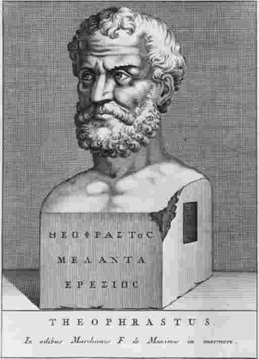

亚里士多德于公元前335年开始在吕克昂里教学。从公元前335年到公元前322年的十三年是他在雅典的第二阶段。他在雅典的第一阶段共有二十年，从公元前367年直到公元前347年。在公元前347年，他突然离开该城。关于他离开的原因没有可靠的记录；但在公元前348年，希腊北部城市奥林索斯陷落到马其顿军队手中，一种仇恨反应把狄摩西尼和他的反马其顿盟友推上了雅典的权力宝座：情况很有可能是，就像公元前322年被驱逐一样，政治问题使得亚里士多德在公元前347年被逐出该城。
不管出于什么原因，亚里士多德东渡爱琴海，定居阿特内斯小镇，在那里有他妻子一方的姻亲。阿特内斯的统治者或者说“独裁者”名叫赫尔米亚，既亲近马其顿，又喜欢哲学。赫尔米亚把“阿索斯城堡给亚里士多德及其同伴居住；他们一起在院子里聚会，把时间都投入到哲学研究上；赫尔米亚给他们提供了一切所需”。
亚里士多德在阿索斯住了两三年。不知何故，他后来又搬迁到附近莱斯博斯岛上的米蒂利尼居住。据说，他在那儿遇见了同岛居住的伊勒苏斯人泰奥弗拉斯多，后来成为亚里士多德的学生、同侪及其衣钵的继承者。后来，又不知何故，亚里士多德离开爱琴海，回到他的出生地斯塔吉拉，在那里一直居住到腓力二世再次召唤他去雅典。
图3赫尔米亚把“阿索斯城堡给亚里士多德及其同伴居住；他们一起在院子里聚会，把时间都投入到哲学研究上；赫尔米亚给他们提供了一切所需”。庭院已经不复存在了，但后来的城堡还有一部分依然耸立。
古代舆论对赫尔米亚评价极坏：他不仅是个暴君，还是个野蛮之人，一个去睾的宦官。但他对亚里士多德很慷慨。作为报答，亚里士多德娶了赫尔米亚的侄女皮提亚斯，她为亚里士多德生了两个孩子：皮提亚斯和尼各马可。并且，当赫尔米亚在公元前341年被出卖、受刑并被波斯人以极其恐怖的方式处死时，亚里士多德为了纪念他而创作了一首赞美诗。不管赫尔米亚性格如何，他对科学发展有功。因为正是在亚里士多德云游期间，即公元前347年至公元前335年，尤其是居住在爱琴海东岸期间，他进行了奠定他科学声誉的研究工作中的主体部分。
因为，如果说亚里士多德的历史研究令人印象深刻，但与他的自然科学研究相比就算不了什么了。他在天文学、气象学、化学、物理学、心理学和其他五六个学科中都进行了观察或收集了观察资料。不过，他的科学研究名声主要建立在动物学和生物学研究之上：他对动物的研究奠定了生物科学的基础；他的研究直到他死后两千年才被超越、替代。作为这些研究之基础的调查工作，其中一些重要内容是在阿索斯和莱斯博斯岛进行的；总之，亚里士多德讲述海洋生物时常常提到的地名表明爱琴海东部是一个主要研究地域。
亚里士多德非常勤勉地要揭示的科学事实都收集在两大卷书中：《动物史》和《解剖学》。《解剖学》没有被保存下来；如其书名所示，那是关于动物内部组成和结构的书。有理由相信那本书中包含有图解和图样，也或者主要就是由图解和图样构成。《动物史》保存了下来，它的书名（就像亚里士多德其他几本书的名字一样）令人误解：“历史”一词由希腊单词historia音译而来，该词的实际意思是“调查”或“研究”；更为恰当的书名翻译应该是《动物研究》。
《动物史》（即《动物研究》）一书详细地讨论了各种动物的内部和外部的组成部分；构成动物身体的不同的物质成分——血液、骨头、皮毛和其他成分；动物中不同的产崽方式；它们的饮食习惯、生活环境和习性。亚里士多德谈到的动物有绵羊、山羊、鹿、猪、狮子、土狼、大象、骆驼、老鼠和骡子。他描述的鸟类包括：燕子、鸽子、鹌鹑、啄木鸟、老鹰、乌鸦、乌鸫、布谷鸟。他深入研究的对象包括乌龟和蜥蜴、鳄鱼和毒蛇、海豚和白鲸。他仔细考察了各种昆虫。他尤其熟悉海洋动物，并在这方面有着渊博的知识，熟悉对象包括鱼类动物、甲壳动物、头足纲动物、贝壳动物。《动物研究》的研究对象从人到干酪蛆，从欧洲的野牛到地中海的牡蛎。希腊人所知道的每一个物种都被注意到了，大多数物种都有详细的描述；有些情况下，亚里士多德的叙述既详尽又准确。

图4“亚里士多德……后来又搬迁到附近莱斯博斯岛上的米蒂利尼居住。据说，他在那儿遇见了同岛居住的伊勒苏斯人泰奥弗拉斯多，后来成为亚里士多德的学生、同侪及其衣钵的继承者。”
动物学那时是门新学科。面对数量如此巨大的动物种类，亚里士多德该从何处着手呢？下面是他的回答：
亚里士多德首先以人为研究对象，因为人体最为我们所熟悉，可用做参照点。他知道，他所说的很多话人们再熟悉不过——写“人的脖子在头和躯干之间”似乎太幼稚或书生气了。但亚里士多德想完整而有条理地进行叙述，有时甚至以陈腐叙述为代价；不管怎样，讨论很快就变成专业的叙述。以下节选的段落会反映出《动物研究》的些许特点：
亚里士多德接着讨论触须的大小。他把章鱼与其他头足类动物，如乌贼、小龙虾等进行了比较。他详细地描述了这种生物的内部器官，很明显，他进行了解剖并仔细地进行了检查。在上述引文中，他提到被称为“交接”的现象，即雄性章鱼一个触须上的叉开部分，雄性章鱼以之与雌性章鱼进行交配。这种现象不容易被观察到，亚里士多德本人也不是完全确信（至少他在其他地方表示了怀疑：章鱼是否用触须进行交配？）；但他的说法是完全正确的；他所描述的事实直到19世纪中叶才被人重新发现。
人们很容易对《动物研究》有溢美之词，不管怎样这是一部天才之作，一座不知懈怠者的丰碑。毫不惊讶地，许多煞风景的学者会指出其中的几点不足。
首先，亚里士多德被指责经常犯拙劣的错误。最臭的一个例子仍与交配有关：亚里士多德不止一次声称交配时雌苍蝇将一个细管或细丝向上插入雄性苍蝇的体内，并且还说“这对任何试图分开正在交配的苍蝇的人来说都是显而易见的”。这并不显而易见，相反，亚里士多德的断言是错误的。另一个例子是关于欧洲野牛的叙述。在对这种毛发蓬松的野兽进行一段模糊描述之后，亚里士多德说这种野兽由于肉的用途而经常受到捕猎，并且说“它用踢蹄子、排大便的方式进行自卫，它能把自己的粪便喷射到八码之遥——它这样做很容易，也经常这样做；粪便十分灼热，会把猎狗的皮毛灼伤”。描写得很好，并且很明显不是在开玩笑：亚里士多德只是被一个猎人酒后胡言骗了。
第二，亚里士多德被指责没有使用“实验方法”。他著述里提到的各种观察——他人的观察或者他本人的观察——大都是业余水平。这些观察都是在野外进行的，不是在实验室内展开的。亚里士多德从未试图设置适当的实验条件或进行控制性观察。没有证据表明，他曾试图重复观察以检验或校正结论。他的整个程序，按照任何科学标准来说都是草率的。
第三，有人批评亚里士多德没有认识到测量的重要性。真正的科学是要用数量表示的：亚里士多德的描述是定性描述。他绝不是个数学家。他没有打算将数学应用到动物学上。他没有称标本的重量或量标本的尺寸。他记录的是一个外行对事物的印象，而不是专业的计算。
这些指责都有些道理——亚里士多德不是一个一贯正确的人，而且他是一个开拓者。但这些指责说错了地方。第一项指责是乏味的。《动物研究》中存在许多错误，一些错误是因为亚里士多德当时几乎没有仪器可用造成的；一些则是观察或判断上明显的错误。［那个后果最严重的错误导出了“自然生殖”理论。亚里士多德声称，一些昆虫“不是由母体昆虫产生的，而是自然生成的：一些是由落在叶子上的露珠生成的……一些在腐化的泥土或动物粪便中生成，有的在树木（活着的草本植物或枯木中）生成，一些在动物的皮毛中生成，一些在动物的血肉中生成，一些则在动物的粪便中生成”。亚里士多德观察了头顶上的虱子、粪坑中的蛆；只是由于谨慎不够或缺乏仪器，他观察得不够准确。但是，错误远没有创见多——并且，什么样的科学工作能免于错误？
《动物研究》里包含一段话，经常被说成是一个实验的报告。亚里士多德描述了小鸡在鸡蛋里的早期发育情况。他相当详细地记录了胚胎连续多天的生长情况：他从孵化小鸡的母鸡身下一天拿出一个鸡蛋，打破后记录鸡蛋里每天所发生的变化。（如果我们相信这段话的含义，那么他不仅在家养的鸡身上进行实验——描述得非常详细——而且也用其他鸟类进行了实验。）
对小鸡胚胎的描述是《动物研究》中非常卓越的段落；但这不是一个严格意义上的实验报告。（比如，就我们所知，亚里士多德没有控制鸡蛋孵化的条件。）《动物研究》作为一个整体也不都是这样的，这样有日期的、连贯的观察是很少的。但这也不足为怪。“实验方法”对亚里士多德所从事的研究来说没有特殊的重要性。他在开创一个新的学科，有极其丰富的信息等待收集、筛选、记录、组织。那时还不需要实验证据。不管怎样，对于描述性动物学来说，实验并不合适。你无须使用“实验方法”来确定人有两条腿，或者用实验方法去描述章鱼的交配。亚里士多德本人知道，不同的学科要求不同的研究方法。那些指责他没有进行实验的人乃是囿于一种庸俗的错误，即所有学科必须通过实验途径来研究。
至于第三点指责，有时能看到的回应是，亚里士多德的动物学之所以不是定量研究，是因为他没有定量研究所需要的技术设备：他没有温度计、没有精密的计量器、没有准确的计时器。这些都千真万确；但这一点不应被夸大其词。希腊的店主称量已杀死切好的动物的肉，亚里士多德却不称量活着的动物，这从技术上讲是没有道理的。以此断言亚里士多德不是数学家也并不恰当。尽管他本人对数学的进步没有贡献，他对同时代人的数学作品是很熟悉的（数学的例子和引用在他的作品里很多）；并且，不管怎样，几乎不需要多少数学专业知识就可以把测量引入学科研究之中。
实际上，《动物研究》中含有大量模糊的定量陈述（这种动物比那种大些；这个动物比另外一个排的精液要多）。也有少量明确的定量观察。亚里士多德谈到，在两种主要的鱿鱼中，“那种叫做teuthoi的比叫做teuthides的要大得多，可长到七英尺半；一些乌贼有三英尺长，并且章鱼的触须有时也有那么长或者更长些”。亚里士多德似乎测量过头足类动物的尺寸。他本来完全可以称它们的重量，并进行其他重要的统计，但他情愿不那么做。那不算是错误，而是一种明智的选择。亚里士多德很清楚地知道，在他的动物学中，重要的是形状和功能，而不是重量和大小。章鱼触须的长度因标本的不同而不同，没有多少科学意义；科学家关注的是触须的结构，是它在这种动物的生命中的功能性作用。
《动物研究》不无瑕疵，但它是部杰作。没有其他什么地方能更生动地显示亚里士多德的“求知欲”了。